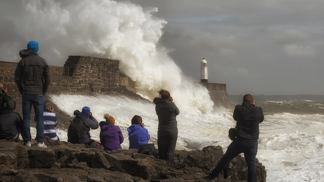

Don't go and take photos of the sea for f**k's sake: Storm advice for dickheads
WITH Britain braced for the storm of the century, the Met Office is offering clear advice to dickheads who'll ignore it:
Don't take photos of big waves
More specifically, don't go to coastal locations famous for big waves during a red-warning storm and try to get a picture of yourself almost being hit by one. It's as safe as going down the M6 and trying to get a photo of yourself almost being hit by a speeding HGV.
Don't stand under a tree
Easily avoidable at any time, and standing under a big old rotting tree could prove fatal today. Yes, it probably won't, but what are you missing out on if you don't? The thrill of looking up and seeing branches? Can that not wait until Sunday?Don't go for a moorland drive
Feel like you're losing out on the storm of the century by staying in and watching it through the windows? Got a bad case of extreme weather FOMO? Don't pack the family into the Vauxhall Corsa and go motoring on Dartmoor. You won't enjoy that flask of tea upside-down in a ditch.Don't walk a high-sided dog over a bridge
Let the hound shit in the garden today. Don't fool yourself that just because you've put a hi-viz jacket on your Old English Sheepdog to make it look like Boris Johnson it's safe to walk it over the nearest suspension bridge. You could end up flying it like a kite.Don't attempt to fix power cuts yourself
If power lines have been brought down, resist the temptation to connect the ends together so you can carry on binge-watching Reacher. It actually isn't as simple as connecting the two sparking ends together. 13,800 volts won't care that you're wearing rubber wellies.Don't piss into it
Urinate indoors where possible, and it's always possible. If venturing outside for some knobhead reason, don't unsheath your member and defiantly urinate into the very teeth of Eunice while screaming 'You're not the boss of me!' The consequences will be predictable, unpleasant and fully deserved.